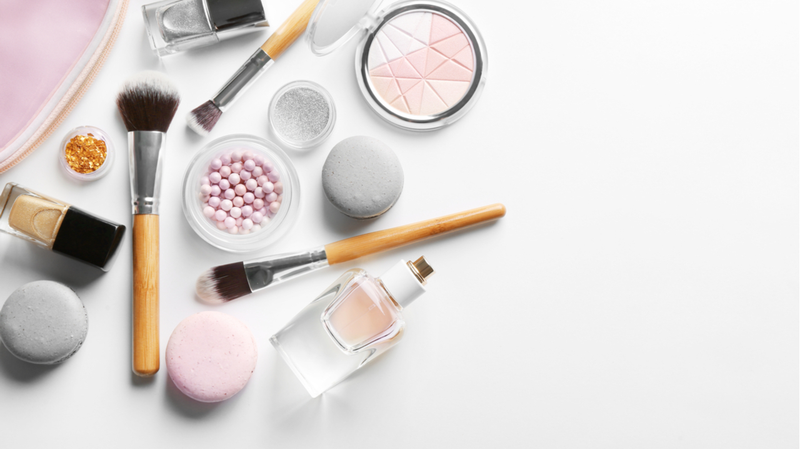

Corporate information
Grim cosmetics
This company was founded in 1923 by Danessa Myrix. Dannissa always dreamed of creating cosmetics and worked as a nanny in order to save money for the development of the first product. The first Danessa decided to make a product that the vast majority of women use - mascara. this is how the famous Leningrad mascara appeared. The mascara was an incredible success and Danessa continued to create cosmetics, then she released powder, blush and a line of lipsticks in nude shades.
